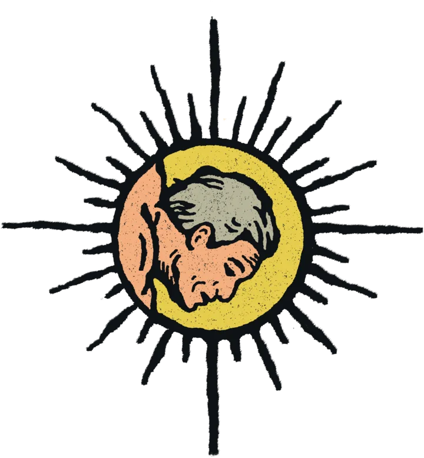
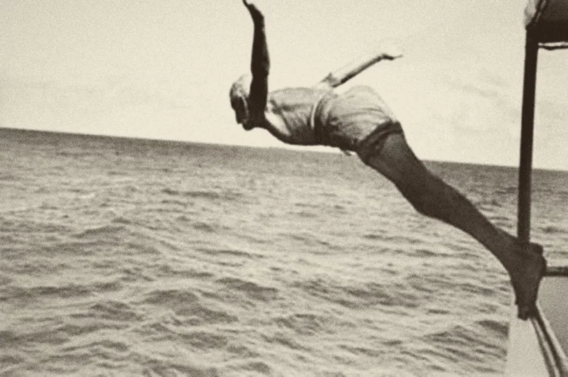

O Prático
Depois do Mundo, ainda havia o mar.
A leitura
Significado
- Retorno
- Mestria
- Orientação
- Serviço
Invertido
- Saber guardado para si
- Chegada sem volta
- Mergulhar em águas desconhecidas
“O salto do que conhece o caminho das águas.”
A jornada
O tarô conta uma viagem em vinte e duas cartas. Começa no Louco, que sai do porto sem mapa, e termina no Mundo, que fecha o ciclo.
O Prático é a carta que vem depois. É quem já fez a travessia e volta para guiar quem está chegando, como o prático conduz os navios pela barra.
Tire sua carta
Você tirou
Inspirado em Zé Peixe

José Martins Ribeiro Nunes
Aracaju, 1927 a 2012
Aos 11 anos já nadava tão bem que um comandante da Marinha o chamou de Zé Peixe. O apelido ficou para a vida inteira.
Foi prático do porto de Aracaju por mais de meio século. Levava os navios pelo canal da barra do rio Sergipe e, quando chegavam ao mar aberto, saltava do convés, às vezes de 17 metros de altura, e voltava nadando. Eram até 10 quilômetros de mar, de uma hora e meia a três horas, conforme o vento.
Trabalhou até os 82 anos. Morreu em 2012, aos 85.

A carta
No tarô, a viagem termina no Mundo. O Zé Peixe chegava ao fim do caminho e voltava a nado para buscar o próximo navio. O Prático é essa volta: a carta de quem já conhece as águas e retorna para guiar quem vem atrás.
A carta na blusa O Prático